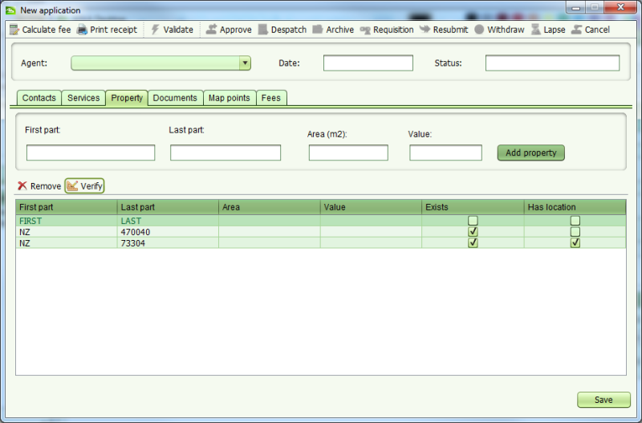

Pour vérifier les détails d'une propriété, utiliser l'onglet Propriété pour ajouter une nouvelle propriété ou sélectionner une propriété existante dans la liste puis cliquer le bouton Verifier.

Si les deux parties de l'identifiant de la propriété (ex. première partie et dernière partie) correspondent exactement à l'unité administrative de base (BA unit) dans la base de données SOLA, la propriété sera marquée comme existante. Si la propriété posséde également une définition géospatiale, elle sera marquée comme ayant une localisation géographique. Cette particularité aide à vérifier les informations de la propriété fournie avec la nouvelle demande.
Noter que les nouveaux éléments ajoutés à la propriété en utilisant l'écran (ex. Première Dernière), ne sont pas ajoutés à la table des unités administratives de base. Ceci veut dire qu'une nouvelle propriété n'apparaîtra pas comme existante si c'est ajouté à une seconde demande. Les nouveaux éléments de la propriété sont créées quand le service relatif est exécuté et la demande approuvée.
Voir aussi